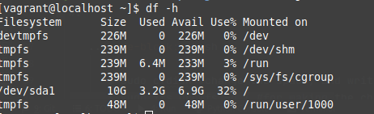

Disk Resize
The main purpose of this article is documenting how to face a problem with the machine storage in vagrant, and also we will see briefly how to install it.
Basic information
Official documentation: https://www.vagrantup.com/
Tested on (Requirements)
Base OS: Fedora 31
OS for the virtual machine: CentOS 8
Disk Resize Example in Vagrant
Create a directory where you will work with vagrant and enter into it.
$ mkdir Desktop/vagrant $ cd Desktop/vagrant
Initialize the directory with Vagrant, it will generate a new file called Vagrantfile, it will be the base for vagrant.
$ vagrant init
Then download the plugin that will help for changing the size of our virtual machine
$ vagrant plugin install vagrant-disksize
Enter to the file and edit it with the options you want to your Vagrant machine such as hostname, network interfaces, bootstrap script, vagrant box, etc. (You can read more about boxes at [1]). For example:
BOX_IMAGE = "bento/centos-8.1" NODE_COUNT = 2 Vagrant.configure("2") do |config| config.vm.box = BOX_IMAGE config.disksize.size = '50GB' #the plugin we've previously installed config.vm.define "controller" do |ctrlr| ctrlr.vm.hostname = "ctrlr.test.lan" ctrlr.vm.network "private_network", ip: "192.168.50.2" ctrlr.vm.provider "virtualbox" do |v| v.name = "Controller" end end end
In the same folder where the Vagrant file is located run the following commands:
$ vagrant up
Go to the new machine using ssh.
$ vagrant ssh
Looking at the vm’s space we find out the following:
Then we try to expand the space through the commands:
$ sudo cfdisk #change the space, and write to the disk
It should look like this:
Here we have to click on the resize option and it should look like the following:
After that it will ask for verification, just type “yes” and then click on write
Then enter and exit, after that process run the following commands:
$ sudo xfs_growfs -d / #for making the changes $ df -h #for checking if it worked
References
- Author:
Manuela Herrera-López <mherreral@eafit.edu.co>